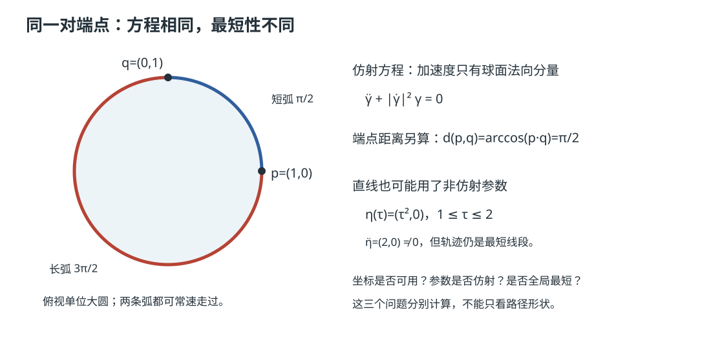

本页目录
流形几何 III · 黎曼度量、联络与测地线
对标：Lee Riemannian Manifolds §2–5 ｜ 前置：mfld-01/02、微分几何 II（第一基本形式） 光滑结构只能谈"可微"，谈不了长度与角度——黎曼度量补上这块：每点切空间配一个内积、随点光滑变化。随之而来的核心难题：弯曲空间里不同点的切向量怎么比较（求导需要比较！）——答案是联络；由它定义"不转弯的曲线"——测地线。
学习层：同一条测地线，三本账不能混
1. 具体开场：平面原点是坏点，还是坏坐标？
取平面中的直线
在 Cartesian 坐标 \((x,y)\) 中，它显然穿过原点，\(g=dx^2+dy^2\)，\(\Gamma^k_{ij}=0\)，所以是仿射测地线。若改用极坐标
则 \(\gamma(1)\) 的 \(r=0\)，\(\theta\) 没有唯一值，\(g_{\theta\theta}=0\)，\(1/r\) 型 Christoffel 也失效。先预测：这是否意味着平面流形在原点破裂？答案应是否；这是坐标图的边界，换回 Cartesian 图，点、长度和测地线都继续存在。
再把视线移到单位球：同一条大圆可以走一小段、走过半圈，或恰好走到对跖点。三种路径都满足仿射测地线方程，但全局距离结论不同。实验先收下四项预测，再揭示 \(g\)、\(\Gamma\)、能量、残差和最短性账本。
2. 形式桥：从度量到 Christoffel，再到 ODE
在坐标 \(x^i\) 中，黎曼度量是正定矩阵场 \(g_{ij}\)，长度和能量为
Levi-Civita 联络的坐标系数为
仿射参数下的测地线方程是
沿这条方程，\(\nabla_{\dot\gamma}\dot\gamma=0\) 给出 \(E\) 恒定；但“方程的临界点”与“给定端点的全局最短路”是两个命题。后者还要看 cut locus、共轭点和路径长度。
平面两张图。 Cartesian 图的 \(g=I,\Gamma=0\)；极坐标图的非零项是
方程写成
这些 \(1/r\) 并不是额外的力；它们记录基向量随坐标移动的方式。
球面两张图。 用余纬 \(\theta\) 和经度 \(\varphi\)：
立体投影坐标 \((u,v)\)（排除北极）由
覆盖南极附近的另一张正则图。转换改变坐标分量和 Christoffel 表达式，却不改变嵌入点、内积或几何能量；北极没有有限的这张图坐标，不是球面出现了洞。
3. 误区与模型边界
| 误区 | 需要保留的边界 |
|---|---|
| “\(\Gamma\ne0\) 就是有曲率。” | Christoffel 不是张量；平面极坐标中 \(\Gamma\ne0\) 而曲率仍为 0。要用 Riemann 张量判断曲率。 |
| “测地线就是全局最短路。” | 测地线是局部临界曲线；球面的大圆优弧满足方程但不是端点间最短。 |
| “坐标图在极点失效，所以流形有奇点。” | 坐标奇异可由另一张图消除；流形奇异是没有任何兼容正则图覆盖，二者不能混称。 |
| “只看 \(L\) 就能得到数值方程。” | 仿射参数下能量 \(E\) 让方程保持二阶形式；任意参数会引入沿切向的非零加速度项。 |
| “对跖点的最短测地线唯一。” | 球面一对对跖点有无穷多条长度 \(\pi\) 的最短大圆弧；唯一性需排除 cut locus。 |
4. 测地线—度量互动实验
实验提供五个确定性预设：Cartesian 平面直线、穿过极点的极坐标平面直线、球面短大圆弧、长大圆弧和对跖点。每次显示都把四件事并排记账：
- \(g_{ij}\) 与非零 \(\Gamma^k_{ij}\)；
- 仿射方程残差 \(\|\ddot\gamma^k+\Gamma^k_{ij}\dot\gamma^i\dot\gamma^j\|\)；
- \(E\)、测地线长度和端点的全局距离；
- 当前坐标图与另一张图之间的转换状态。
实验的“仿射通过”不是预设标签：只有当前坐标图正则、坐标方程残差和嵌入中的解析测地线残差都在容差内才报告通过；坐标奇异处报告 unavailable，因为该坐标不能提供方程判定，而不是把流形误判为不满足测地线方程。
JavaScript 失效时的静态后备账本：默认取单位球短大圆弧，球坐标 \(\theta=\pi/3,\varphi=-0.4\)，初速度 \((\dot\theta,\dot\varphi)=(0.55,0.9)\)，仿射时长 \(T=2\)。令 \(v^2=\dot\theta^2+\sin^2\theta\,\dot\varphi^2\)。
| 账本 | 静态读法 | 结论 |
|---|---|---|
| 度量张量 | \(g=\operatorname{diag}(1,\sin^2\theta)\)，初点 \(\sin^2\theta=3/4\) | 正定；极点之外坐标正则 |
| Christoffel | \(\Gamma^\theta_{\varphi\varphi}=-\sqrt3/4\)，\(\Gamma^\varphi_{\theta\varphi}=1/\sqrt3\) | 不是“外力”，是球坐标基的变化 |
| 能量 | \(E=\frac12(0.55^2+\frac34\,0.9^2)\approx0.455\) | 沿仿射测地线保持常数 |
| 长度 | \(L=2\sqrt{2E}\approx1.908\) | 小于 \(\pi\) |
| 全局距离 | \(d(p,q)=\arccos(p\cdot q)=L\)（此预设） | 短大圆弧是全局最短 |
| 方程残差 | \(\|\ddot\gamma+\Gamma(\dot\gamma,\dot\gamma)\|\approx0\) | 仿射测地线命中 |
| 图转换 | \((\theta,\varphi)\leftrightarrow(u,v)\) | 坐标变，嵌入点与能量不变 |
边界对照：把时长改为 \(4\) 得到同一大圆的长段，仍是仿射测地线但不再全局最短；把时长改为 \(\pi\) 且初速沿赤道取 1，到达对跖点，最短路长度为 \(\pi\) 但不唯一。切换到平面极坐标预设，\(t=1\) 的 \(r=0\) 行应显示“仿射判定 unavailable；坐标奇异；流形正则”，而不是 NaN 伪装成曲率。
5. 迁移问题
在机器人、地图或优化中，若算法只保存一张坐标表，遇到极点就会把表示失败误报成几何失败。更稳的接口是同时保留嵌入点/内积可计算的状态、坐标图标签、图转换和定义域标志。对端点问题还要单独报告“满足仿射方程”和“是否全局最短”，不能由一条漂亮的测地线图替代距离证明。
1. 黎曼度量
定义 黎曼度量 \(g\)：每点 \(p\) 一个内积 \(g_p: T_pM\times T_pM \to \mathbb{R}\)，坐标下对称正定矩阵场 \(g_{ij}(x)\)（高代 VI 的正定性逐点站岗）。曲线长度 \(L(\gamma) = \int\sqrt{g(\dot\gamma,\dot\gamma)}\,dt\)；由长度诱导距离——黎曼流形是度量空间（泛函 I 的语言回流）。
例：\(\mathbb{R}^n\) 平直度量 \(g_{ij} = \delta_{ij}\)；曲面的第一基本形式（微分几何 II 的 \(E, F, G\) 正是 \(2\times2\) 的 \(g_{ij}\)——那门课原来一直在做二维黎曼几何）；双曲平面 \(g = \frac{dx^2 + dy^2}{y^2}\)（上半平面——常负曲率世界，非欧几何的正式住所）；Fisher 信息度量 \(g_{ij} = E[\partial_i\ln p\,\partial_j\ln p]\)（统计模型族上的天然黎曼结构——统计 II 的信息阵原来是个度量张量：信息几何的出生证明，自然梯度 = 此度量下的梯度）。
存在性：任何流形都有黎曼度量（单位分解拼局部内积【一行】）——度量不稀缺，特定度量的性质才是学问。
2. 联络：比较不同点的切向量
困难：\(T_pM\) 与 \(T_qM\) 是不同的线性空间——"\(X(q) - X(p)\)"没有意义 ⇒ 向量场无法直接求导。仿射联络 \(\nabla\)：公理化"方向导数"（对方向线性、对被导向量场 Leibniz）；坐标下由 Christoffel 符号 \(\Gamma^k_{ij}\) 编码（\(\nabla_{\partial_i}\partial_j = \Gamma^k_{ij}\partial_k\)——"基向量自己怎么漂移"的记录）。
定理（黎曼几何基本定理） 每个黎曼流形上存在唯一的联络（Levi-Civita 联络）同时满足：① 与度量相容（\(\nabla g = 0\)：平移保内积）；② 无挠（\(\Gamma^k_{ij}\) 对称）。且
【证明】 Koszul 公式：把相容性写三遍（轮换指标）、加加减减解出 \(g(\nabla_XY, Z)\) 的显式表达——唯一性与存在性同一行代数。\(\blacksquare\) 读法：度量白送一个求导法则——几何（长度）决定运动学（平移）；\(\Gamma\) 不是张量（换坐标带二阶项）——它是"坐标系的假力"（离心力/科氏力的数学身份）。
平行移动：沿曲线解 \(\nabla_{\dot\gamma}X = 0\)（线性 ODE——存在唯一由 ode 理论白送）——"向量不转动地搬运"；和乐（holonomy）：绕闭路平移回来向量可以转了角度——曲率的第一征兆（下一页主角）。
3. 测地线

定义 \(\nabla_{\dot\gamma}\dot\gamma = 0\)——"速度向量沿自身平行移动"：不转弯的曲线。坐标方程：
（二阶非线性 ODE——存在唯一性（ode-01/sc 线的 Picard）给：每点每方向恰一条测地线。）
两重身份的等价【骨架】：变分身份——测地线是长度（等价地能量 \(\int g(\dot\gamma,\dot\gamma)dt\)）泛函的临界点：Euler–Lagrange 方程恰是测地线方程（变分法一算——"仿射测地线 = 不转弯"）。⚠️ 临界 ≠ 最短：球面大圆的劣弧最短、优弧只是驻点——局部最短、全局未必（共轭点理论管辖【引用】）。
指数映射 \(\exp_p(v)\) 表示从 \(p\) 出发、沿初速度 \(v\) 的测地线走单位时间所得的点——它是切空间到流形的"局部展平地图"（法坐标：\(g_{ij}(p) = \delta_{ij}\)、\(\Gamma(p) = 0\)——每点附近都可以"假装平直"到一阶：广义相对论等效原理的数学内核）。Hopf–Rinow 定理【引用】：度量完备 ⟺ 测地线无限延伸 ⟺ 任两点有最短测地线——"完备性买连通的最短路"（泛函 I 完备性哲学的几何版）。
4. 练习与要点
例 1（球面测地线亲算） \(S^2\) 球坐标度量 \(ds^2 = d\theta^2 + \sin^2\theta\,d\varphi^2\)：算 \(\Gamma\)（非零者 \(\Gamma^\theta_{\varphi\varphi} = -\sin\theta\cos\theta\)、\(\Gamma^\varphi_{\theta\varphi} = \cot\theta\)），验证赤道 \(\theta = \frac\pi2\) 满足测地线方程——大圆 = 球面的直线（航线为何走大圆的定理版）。
例 2（双曲平面的测地线） 上半平面度量下验证竖直线是测地线（对称性论证：反射等距固定它）——非欧几何的"直线"是竖线与半圆：平行公理在此失效的实物模型（过线外一点无穷多条"平行线"）。
例 3（🔗 自然梯度） 统计模型族上最速下降的正确方向是 \(-I(\theta)^{-1}\nabla\ell\)（Fisher 度量下的梯度）而非 \(-\nabla\ell\)：参数化不变的优化——普通梯度依赖坐标（换参数化方向就变），黎曼梯度只依赖几何（优化 II 预条件的几何真身；K-FAC/natural policy gradient 的出处）。\(\blacksquare\)
收官页：曲率——黎曼张量的定义与含义、截面曲率、以及 Gauss–Bonnet 的高维眺望。